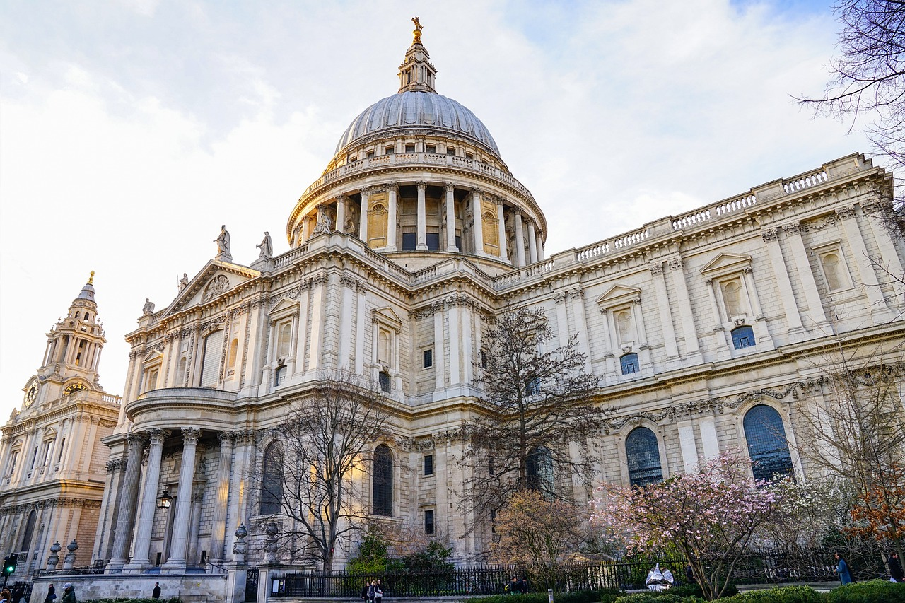

When I visited Valletta, I got to check out some really cool spots!
First, I took a private boat tour around the Grand Harbour,
and it was amazing! Cruising around the harbor,
you get these incredible views of the city’s old fortifications and colorful buildings all along the coast.
The water was so blue, and the guide shared some fun facts about the history of the place.

Then, I went to St. John’s Co-Cathedral. The outside looks pretty plain, but as soon as you step in,
it’s like, whoa! The whole place is covered in gold details and beautiful artwork, including these huge paintings by Caravaggio.
It’s super impressive and has this old, majestic vibe that you can feel as you walk around.

Lastly, I stopped by Fort St. Elmo, which is now the National War Museum.
You can really sense the history here, especially with all the exhibits from different time periods,
from the Knights of Malta to WWII. The views over the water are awesome too, and you can imagine soldiers looking out for ships ages ago.
It’s definitely a must-see if you’re into history.